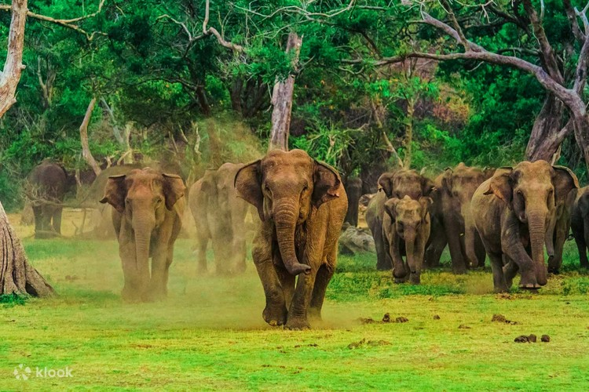
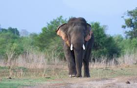
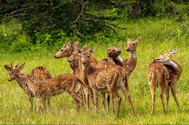
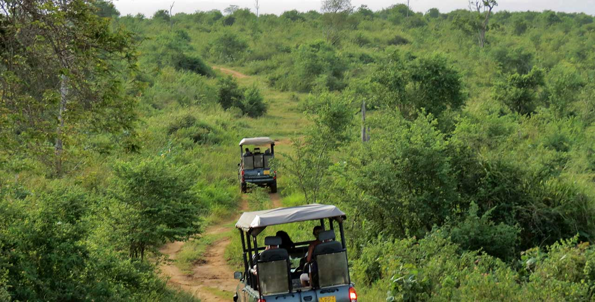
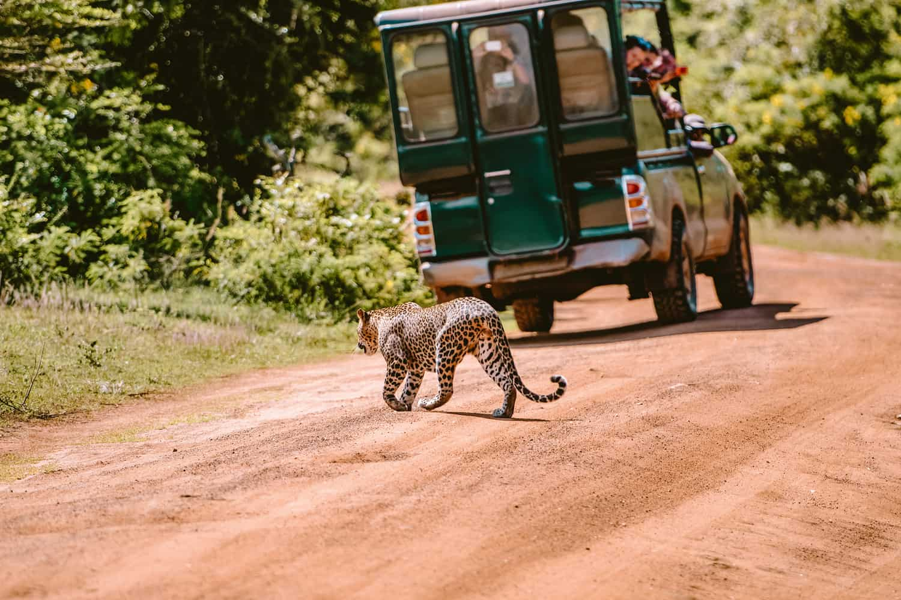
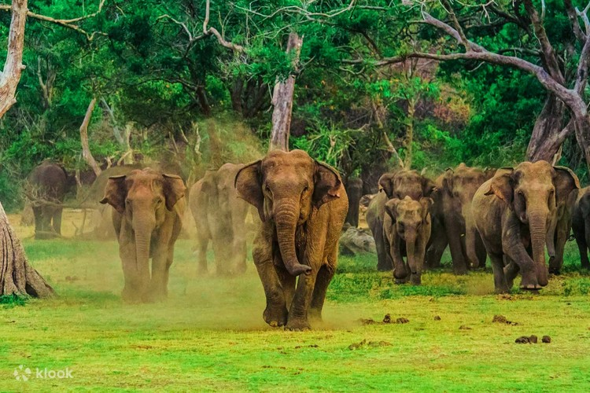
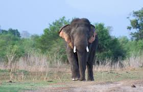
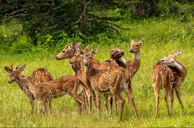
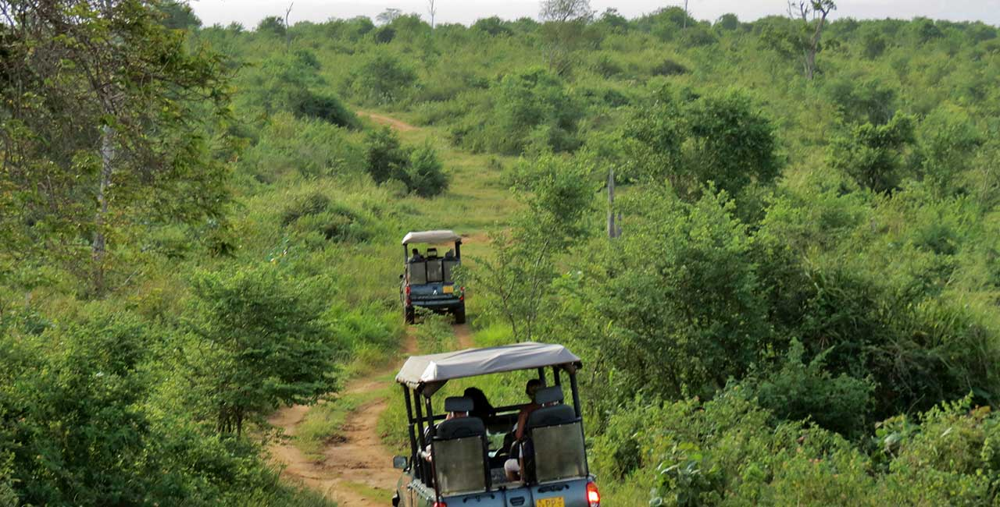
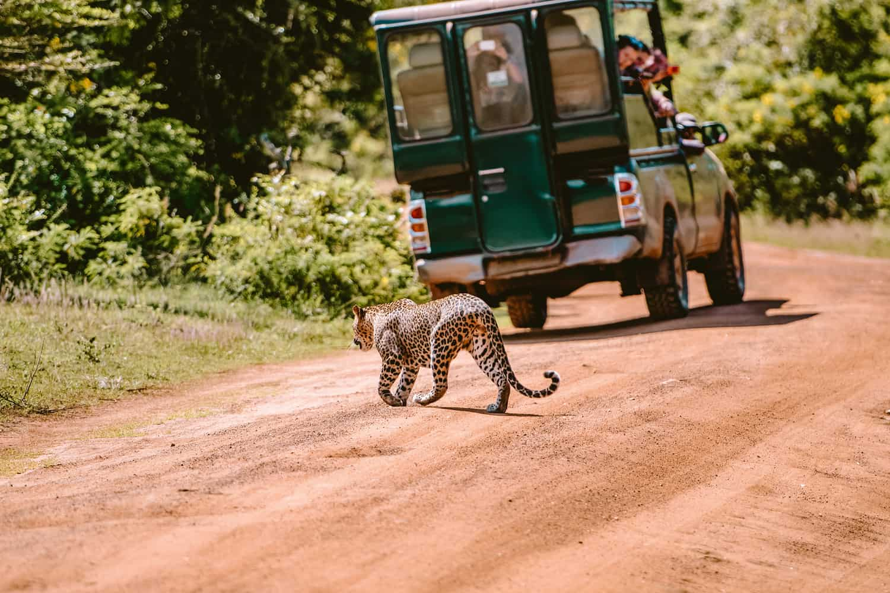

The Sabaragamuwa Province (Sinhala: සබරගමුව පළාත Sabaragamuwa Paḷāta, Tamil: சபரகமுவ மாகாணம் Sabaragamuwa Mākāṇam) is one of the nine provinces of Sri Lanka, the first level administrative division of the country. The provinces have existed since the 19th century but did not have any legal status until 1987 when the 13th Amendment to the Constitution of Sri Lanka established provincial councils. The Sabaragamuwa Province contains two districts: Ratnapura and Kegalle. It is named after its former indigenous inhabitants, namely the Sabara, an indic term for hunter-gatherer tribes, a term seldom used in ancient Sri Lanka. Sabaragamuwa University is in Belihuloya.

 








Udawalawe (also known as Udawalawa) is a small town located in the southern part of the Ratnapura District in Sri Lanka. It is situated in close to the district's boundary with the Hambantota District and Monaragala District. The town is the main entry point into the Udawalawe National Park which is a major National Park in Sri Lanka which is renowned for its high population of wild Asian elephants. The Udawalawe National Park located approximately 160 km (99 mi) away from Colombo, is the closest national park to Colombo. The town is also notable, because of the Udawalawe Reservoir, which was created in 1969, following the construction of a 3.9 km (2.4 mi) dam and a 6 MW (8,000 hp) hydro-electric plant on the Walawe river. The reservoir is the third largest reservoir in Sri Lanka.


Adam's Peak is a 2,243 m (7,359 ft) tall conical mountain located in central Sri Lanka. It is well known for the Sri Pada (Sinhala: ශ්රී පාද), i.e., "sacred footprint", a 1.8 m (5 ft 11 in) rock formation near the summit, which in Buddhist tradition is held to be the footprint of the Buddha, in Hindu tradition that of Hanuman or Shiva (Tamil: சிவனொளிபாதமலை, lit. 'Sivanolipaathamalai'), i.e., "Mountain of Shiva's Light", and in some Islamic and Christian traditions that of Adam, or that of St. Thomas.


World's End is located within the Horton Plains National Park in Nuwara Eliya District, Sri Lanka. It is a sheer cliff, with a drop of about 4,000 feet (1,200 m).It is one of the most visited parts of the Park, and a key tourist attraction in the Nuwara Eliya District and the country at large.1 km away from the main cliff is a smaller cliff with a 1,000 feet (300 m) drop, colloquially known as Mini World's End. The Indian Ocean, 81 km to the south, can be observed on clear days.